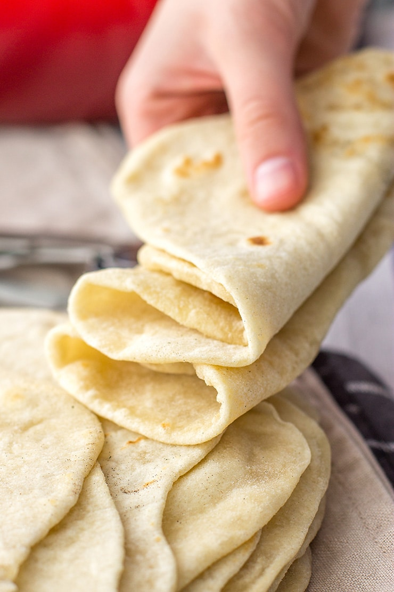

Flour Tortillas

You've never had tortillas until you've had them home-made! Trust me.
Not much to say about these, they speak for themselves. Nasty, cardboard, pre-cooked store bought tortillas? No thanks! There are some good store bought tortillas, and they will always be the ones that you have to keep in the fridge and cook in a skillet. These are really thick and just literally DELICIOUS tortillas so if you have the time, make them!
Ingredients
- 2 cups all-purpose flour
- 1/2 tsp salt
- 1/2 tsp baking powder
- 1/4 cup lard or shortening
- 3/4 cup warm water
Instructions
- In a large bowl, combine flour, salt and baking powder. Cut in the lard until the mixture resembles coarse crumbs.
- Gradually add warm water and stir until the dough no longer sticks to the sides of the bowl. (you can add too much water pretty easily. It's about 3/4 cup of water. Fill up a cup and slowly add and mix until its not sticky and slippery anymore.)
- Turn out onto a floured surface and knead until smooth, about 3 minutes. With your hands, tear the dough into 10-12 equal pieces, rolling each piece into a little ball as you go. Set them into the bowl and cover with a wet kitchen towel and let them rest for 20 minutes.
- Preheat a skillet over medium-high heat. (you can use cast iron if you want, I have one the doesn't have any kind of rim so it's just a flat iron skillet, perfect for tortilla making!)
- Roll out each ball into a circle. Don't worry if they don't come out into perfect circles, as long as you can make a taco you're good! Try not to get too much flour in them when you're rolling them out because they'll come out more dry. Place tortilla in the skillet, and cook until air bubbles start puffing up and the bottom is starting to get nice golden baked spots; flip and continue cooking until golden on the other side. (To keep your little dough balls from drying out, I recommend leaving them covered in the bowl and rolling them out and cooking them one by one. Roll out a tortilla, put it on the skillet, start rolling out the next one. Rinse, repeat.) Also, you're going to have to keep an eye on the heat of your skillet. Experiement a little, you'll get it. Too hot and it starts burning before the whole tortilla cooks, not hot enough and its never gonna puff up. They cook pretty fast when you've got it right. Maybe 90ish seconds per side.
- Stack cooked tortillas in some foil to keep warm.
- Put some butter on one of your glorious tortillas and eat that lil' guy! You can thank me later!
- Enjoy!